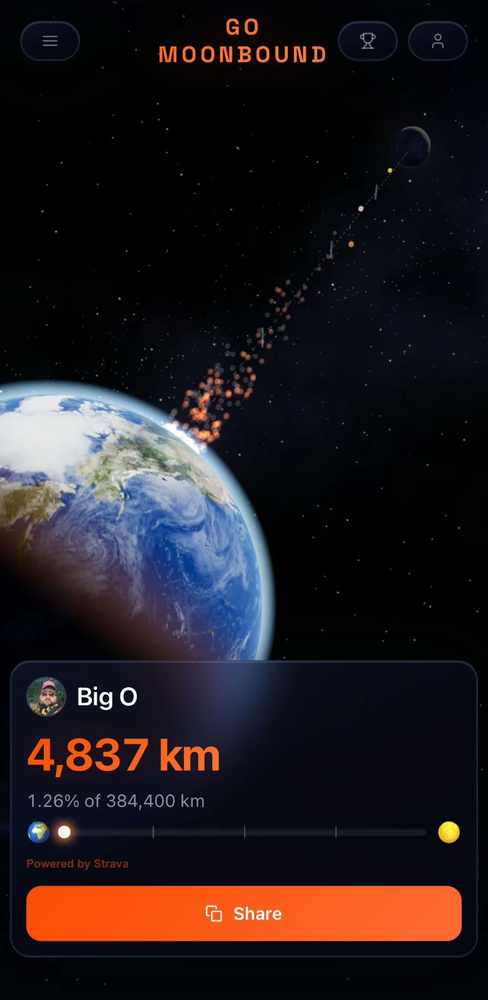
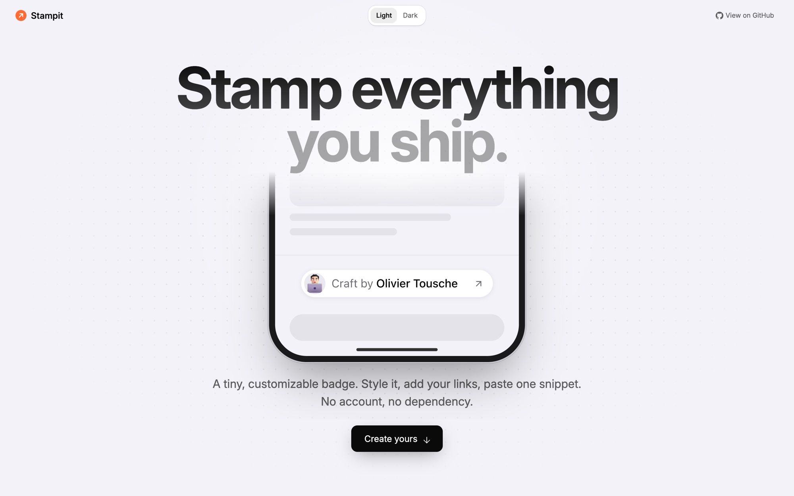
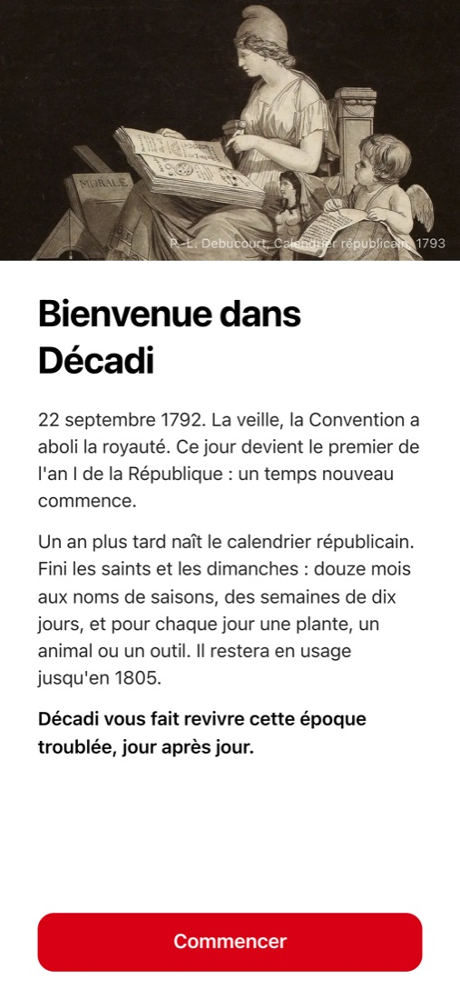

Go MoonBound
Transformer ses kilomètres Strava en voyage vers la Lune
669voyageurs
25 %d'emails récupérés
72 %actifs ce mois-ci


De l'identification des irritants aux tests utilisateurs, je conçois des expériences produit et de service centrées utilisateurs, en articulant stratégie, recherche et design.





Depuis 10 ans, je suis product designer en grand groupe et en agence, sur des SaaS B2B et B2C : j'articule stratégie, recherche et design pour transformer des irritants en produits clairs.
Avec les nouveaux outils d'IA, comme Claude Code et Cursor, je prototype et je livre mes propres produits : moins de transferts, et une intention qui ne se dilue plus entre le design et le code.
Résultat : des produits en production plus vite, des itérations plus rapides, et plus de temps pour la réflexion en amont, là où se joue vraiment un produit.
Certification AnthropicAI Fluency: Framework & Foundations Certification AirmakersCertified No Code App Builder